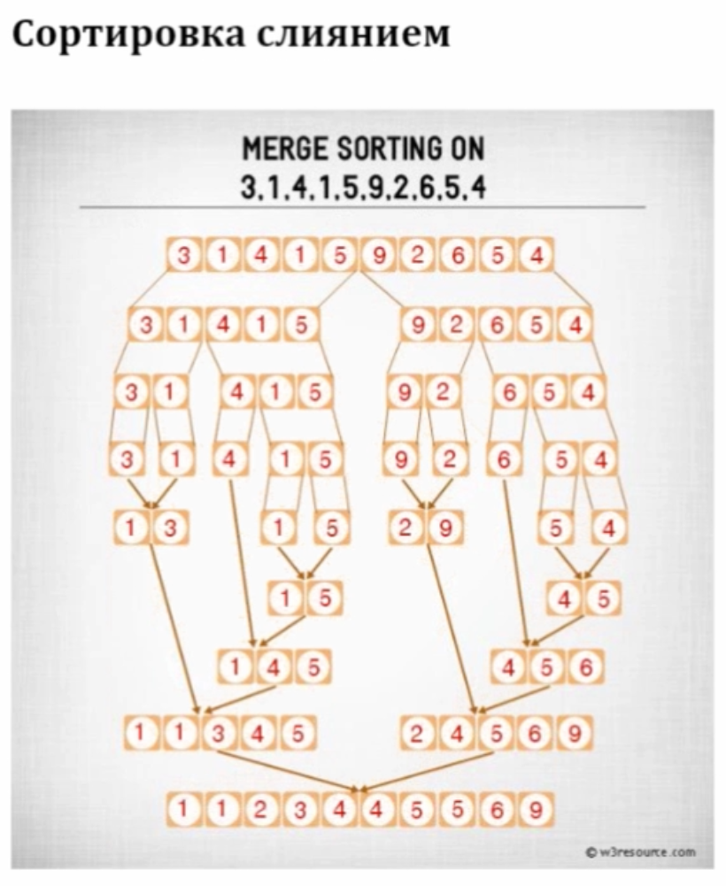

Алгоритм "сортировки слиянием". Сортировка списка.
Условие:
Нужно написать программу, которая сортирует список алгоритмом "сортировки слиянием".
В среднем время сортировки слиянием составляет: O-большое (n log n).
Иллюстрация алгоритма:

Код:
"""ФУНКЦИЯ СОБИРАЕТ ИЗ ДВУХ СПИСКОВ ОДИН СОРТИРОВАННЫЙ, нужно понимать, что левая и правая части будут уже отсортированы."""
def merge(left_list, right_list):
sorted_list = [] # Сортированный список, который вернётся
left_list_index = right_list_index = 0 # Первый индекс для левой и правой части, далее будем копить их в цикле. Эти индексы будут расти по-очереди в цикле, где длина цикла - это размер будущего отсортированного списка.
left_list_length, right_list_length = len(left_list), len(right_list) # Длина списков часто используется, поэтому создадим переменные для удобства
for _ in range(left_list_length + right_list_length): # В цикле обойдём столько раз, сколько длина будущего отсортированного списка (левый + правый)
if left_list_index < left_list_length and right_list_index < right_list_length: # Если текущий индекс для левой и правой части меньше их длин
# Если первый элемент левого подсписка меньше, добавляем его в отсортированный массив (всегда сравнивается первый элемент, т.к. подсписок уже отсортирован)
if left_list[left_list_index] <= right_list[right_list_index]:
sorted_list.append(left_list[left_list_index])
left_list_index += 1
# Если первый элемент правого подсписка меньше, добавляем его в отсортированный массив (всегда сравнивается первый элемент, т.к. подсписок уже отсортирован)
else:
sorted_list.append(right_list[right_list_index])
right_list_index += 1
elif left_list_index == left_list_length: # Если достигнут конец левого списка, элементы правого списка добавляем в конец результирующего списка
sorted_list.append(right_list[right_list_index])
right_list_index += 1
elif right_list_index == right_list_length: # Если достигнут конец правого списка, элементы левого списка добавляем в отсортированный массив
sorted_list.append(left_list[left_list_index])
left_list_index += 1
return sorted_list
"""ФУНКЦИЯ ДЕЛИТ СПИСОК НА ДВА"""
def merge_sort(my_list):
if len(my_list) <= 1: # Возвращаем список, если он состоит из одного элемента
return my_list
mid = len(my_list) // 2 # Найдём середину списка, используем деление без остатка
left_list = merge_sort(my_list[:mid]) # Левый список отправляем в рекурсию
right_list = merge_sort(my_list[mid:]) # Правый список отправляем в рекурсию
return merge(left_list, right_list) # Объединяем отсортированные списки в результирующий
# Входные данные, список, который нужно отсортировать
a = [10, 5, 2, 1, 3, 20, 11, 15, 4, 7, 100, 33, 6, 400, 55, 11, 1, 111, 7, 100, 33, 6, 400, 55, 11, 1, 111]
# Сортированный список
a = merge_sort(a)
print()
print(a)
print()